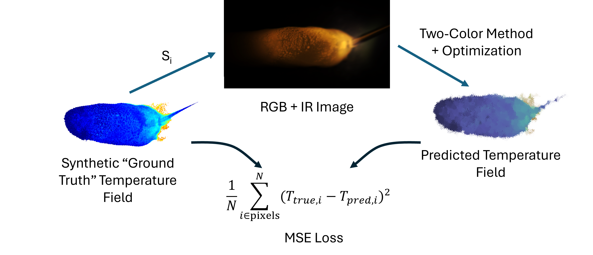
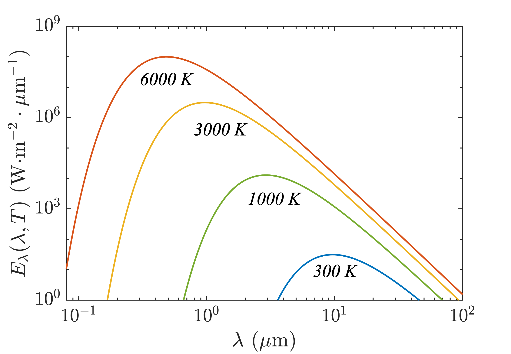
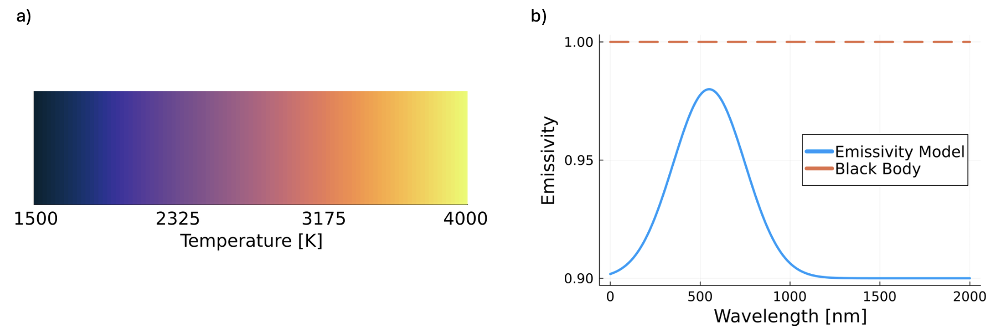
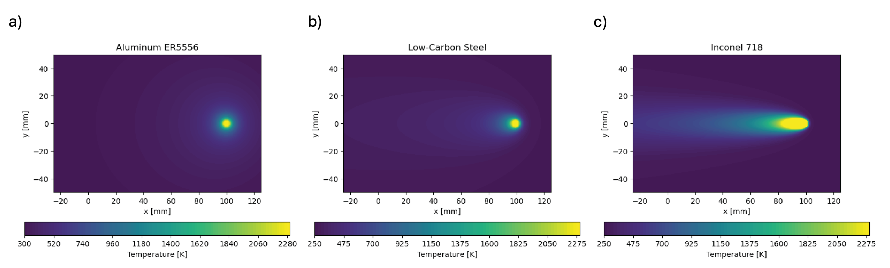
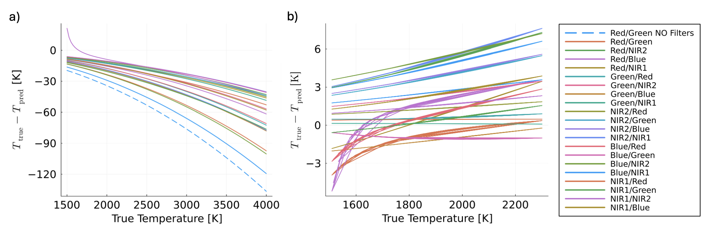

Overview
This project explored how to optimize a two-color thermography setup for high-temperature manufacturing applications such as wire-arc additive manufacturing. Instead of relying on repeated trial-and-error experiments, we built a synthetic framework that generates temperature fields, predicts the camera response, reconstructs temperature using the two-color method, and minimizes error between the reconstructed and true fields.
The goal was to determine which channel combinations and filter wavelength ranges provide the most accurate temperature predictions under realistic emissivity behavior and thermal gradients.
Why it matters
Two-color thermography is attractive because it reduces sensitivity to emissivity compared to single-band thermal measurements. However, accuracy still depends strongly on the camera spectral response, selected wavelength bands, and the temperature distribution being measured. This project provides a way to evaluate those design choices computationally before committing to hardware or experiments.
General workflow
- Generate a synthetic ground-truth temperature field.
- Compute the emitted spectral radiation using Planck’s law.
- Pass that radiation through channel sensitivities and candidate optical filters.
- Simulate the resulting pixel intensities for each sensor channel.
- Apply the two-color ratio method to reconstruct temperature.
- Compare reconstructed temperature to the true field using mean squared error.
- Optimize the filter bounds and channel pair to minimize reconstruction error.
Core equations
The framework starts from Planck’s law, which describes blackbody spectral emission as a function of wavelength and temperature:
Planck's law
\( E_{\lambda,b}(\lambda,T) =
\frac{c_1}{\lambda^5 \left[\exp\left(\frac{c_2}{\lambda T}\right)-1\right]} \)
The simulated signal measured by a channel is computed by integrating the emitted radiation over wavelength, weighted by spectral sensitivity, optical transmission, and emissivity:
Channel signal
\( S_i(T_i,\Delta t) =
C_i \Delta t \int_{\lambda}
E_{\lambda,b}(\lambda,T_i)\,
w_i(\lambda)\,
\tau(\lambda)\,
\epsilon_i(\lambda,T_i)\, d\lambda \)
The temperature reconstruction uses a ratio between two channels:
Two-color ratio
\( r_{c_1/c_2}(T_i)=
\frac{S_{i,c_1}(T_i,\Delta t)}{S_{i,c_2}(T_i,\Delta t)} \)
The optimization minimizes the mean squared error between the true and reconstructed temperature fields:
Objective function
\( \min_{\mathbf{x}}
\frac{1}{N}\sum_{i=1}^{N}
\left(T_{\mathrm{true},i}-T_{\mathrm{pred},i}(\mathbf{x})\right)^2 \)
Temperature field models
To test the method, we used two levels of synthetic inputs. The first was a simple 1D temperature bar spanning a wide temperature range to isolate calibration behavior. The second used 2D temperature fields based on the Eagar–Tsai moving heat source model, which better represents the spatial gradients expected in welding and additive manufacturing.
Eagar–Tsai model
\( T - T_0 =
\frac{q}{2\pi k R}
\exp\left(-\frac{v(x-vt)+R}{2a}\right) \)
Figures





Key takeaways
- Filter selection and channel pairing strongly influence two-color accuracy.
- Synthetic modeling can guide experimental design before hardware testing.
- Different temperature fields can favor different optimal channel/filter combinations.
- The framework helps translate camera specifications into actionable design choices for thermal imaging experiments.
My role
I contributed domain expertise in two-color thermography, additive manufacturing applications, synthetic image generation, and experimental framing of the problem.
Credits
This project was completed collaboratively by Gala Solis, Ethan Meitz, and Eddie Beck.
Gala contributed domain knowledge, synthetic image generation, and camera/material inputs. Ethan developed the two-color implementation and optimization framework. Eddie generated synthetic temperature fields and supported the sensitivity analysis. All three contributed to the project concept, formulation, and interpretation of results.